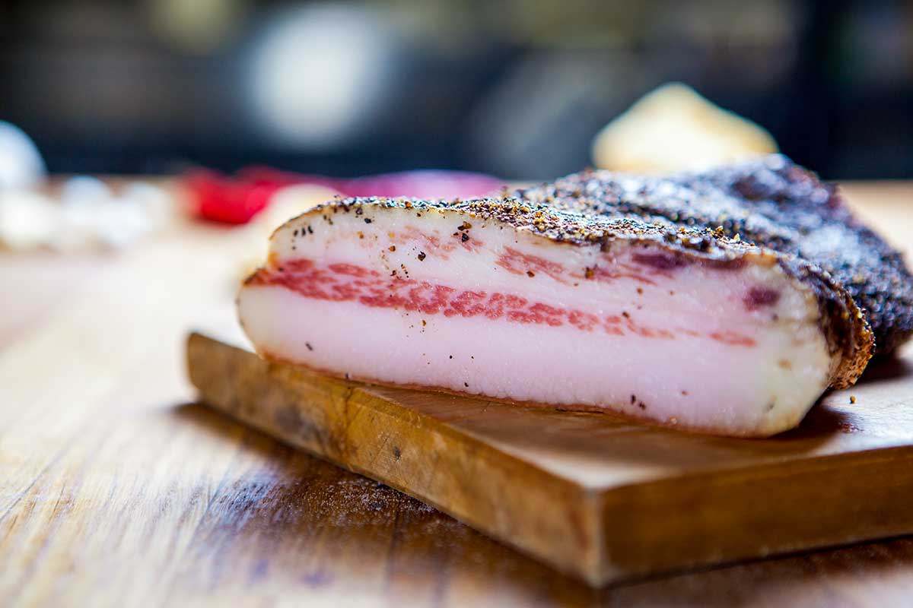

Guanciale

Brief Description
Cured meats
Ingredients
- 1 Large Hog Jowl, skin on
- Instacure No. 2
- Kosher salt
- 1.3 cup sugar
- 1 tablespoon garlic poweder
- 1 table spoon cdrushed balck peppers
- 2 teaspoons dried thyme
- 1 teaspoon ground allspice
'
- 5 or 6 bay leaves crushed
Instructions
- Mix all the cure ingredients together and pack the jowl with it. Massage the cure into the meat and fat. Put the jowl into a container (plastic, glass, ceramic, stainless steel) that just barely holds it, and toss in any remaining cure. Cover the container and put in the fridge for 4 to 7 days. Turn the jowl over once a day.
- When the meat has stiffened up at the thickest part, usually 5 days or more, rinse off the cure (you can leave a little on, but get most off), and pat the jowl dry. Put on a rack in a drafty place for several hours.
- Poke a hole through the skin on a corner of the jowl and tie string to it. Hang the jowl in a cool, moist place (50-55°F and at least 65 percent humidity, but see above for more curing instructions) for at least 3 weeks before eating. To store, cut into large chunks and vacuum seal or cover with plastic wrap and butcher paper before freezing. Guanciale will last, well-wrapped, in the fridge for several months.